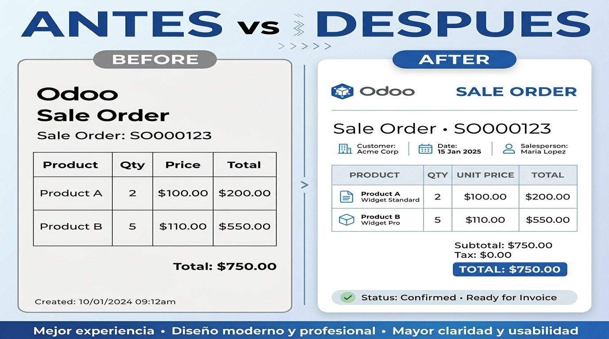

<!-- Sección del Banner Principal (Antes y Después) -->
<section class="oe_container">
    <div class="oe_row oe_spaced">
        <div class="oe_span12" style="text-align: center;">
            
        </div>
    </div>
</section>

<!-- Sección de Títulos y Descripción Comercial -->
<section class="oe_container">
    <div class="oe_row oe_spaced" style="text-align: center; margin-top: 30px;">
        <h2 class="oe_slogan" style="color: #875A7B; font-weight: bold;">Generador de Reportes JRXML a la Medida para Odoo</h2>
        <h3 class="oe_slogan" style="color: #555; font-size: 18px;">Dise&ntilde;a en Jaspersoft Studio e imprime en formato nativo sin depender de servidores Java externos.</h3>
    </div>
</section>

<!-- Sección del Botón de Video en YouTube -->
<section class="oe_container">
    <div class="oe_row oe_spaced text-center" style="text-align: center; margin: 40px 0;">
        <h3 style="color: #333; margin-bottom: 10px; font-size: 20px;">&iquest;Quieres ver c&oacute;mo funciona en acci&oacute;n?</h3>
        <p style="margin-bottom: 20px; color: #666;">Descubre el mapeo de campos y la generaci&oacute;n de facturas en menos de 3 minutos.</p>
        
        <!-- Botón de Enlace a YouTube -->
        <a href="https://youtu.be/7HBj4YlmU2c" target="_blank" style="background-color: #FF0000; color: #ffffff; padding: 14px 30px; font-size: 16px; font-weight: bold; text-decoration: none; border-radius: 6px; display: inline-block; box-shadow: 0 4px 6px rgba(0,0,0,0.15); transition: background 0.3s;">
            &#9658; Ver Video Tutorial en YouTube
        </a>
    </div>
</section>
